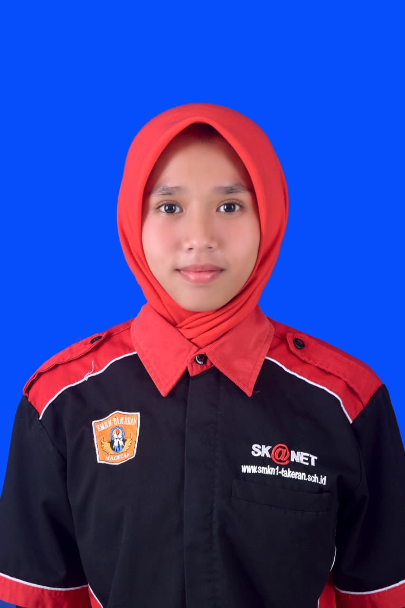

Saya senang belajar mengubah ide menjadi halaman web yang nyata, mulai dari menyusun tampilan hingga membuat kontennya bisa berjalan dengan baik. Bagi saya, setiap proyek adalah kesempatan untuk memahami cara kerja web lebih dalam dan terus memperbaiki cara saya menulis kode.
Perkenalkan, saya Nikita Dwi Rahmadani — siswi SMK jurusan Rekayasa Perangkat Lunak di SMKN Takeran yang sedang menekuni pengembangan web. Saya suka mengubah rancangan tampilan menjadi halaman yang benar-benar bisa dipakai, dengan kode yang tersusun rapi dan mudah dikembangkan lagi ke depannya.
Saat ini saya sedang membangun sebuah website, salah satunya adalah website usaha yang tautannya bisa dilihat pada bagian Proyek di bawah.
Sebagai siswa SMK jurusan Rekayasa Perangkat Lunak, saya mendapatkan keahlian dari materi sekolah dan latihan mandiri. Saya masih dalam tahap belajar, dan terus berusaha memperdalam ilmu di bidang pengembangan web.
Pengalaman kerja lapangan yang pernah saya jalani selama masa sekolah.
Ditempatkan di bagian mesin pengemasan (packaging), membantu proses operasional produksi permen Yupi selama enam bulan. Meski di luar bidang pengembangan web, pengalaman ini memberi saya pemahaman langsung tentang cara kerja industri manufaktur skala besar serta pentingnya kedisiplinan, ketelitian, dan kerja sama tim.
Beberapa pekerjaan yang sedang dan telah saya kerjakan.
Toko online alat musik — gitar, keyboard, drum, hingga aksesoris, lengkap dengan detail produk, harga, dan cara pemesanan.
Kunjungi website →Ada proyek atau ingin berdiskusi? Silakan hubungi lewat salah satu kanal berikut.